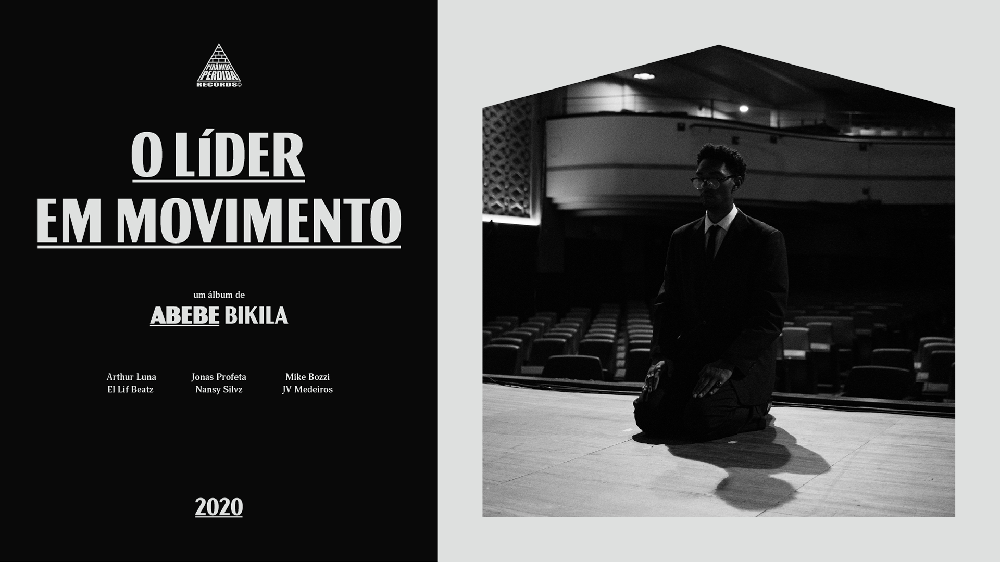

| Essa é a capa do segundo album de Abebe, Gigantes lançado em 13 de outubro de 2018 | |
|  | O terceiro album de Abebe foi lançado em 8 de setembro de 2020, O Lider em Movimento |
| Cidade do Pecado foi lançado em dezembro de 2021 e é o quarto album de Abebe e foi o primeiro lançamento pela sua própria gravadora GIGANTES. |